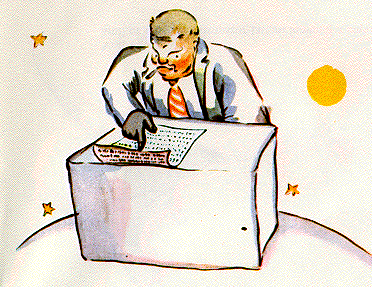
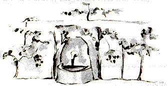

XIII
An ceathrú pláinéad, ba le fear gnó é. Bhí sé chomh gnóthach sin
nár thóg sé a cheann fiú amháin nuair a tháinig an prionsa beag.
- Dia duit, ar seisean leis. Tá do thoitín múchta.
-A trí agus a dó, sin a cúig déag. Dia agus Muire duit. A cúig
déag agus a seacht, sin fiche a dó. Fiche a dó agus a sé, fiche a

hocht. Níl an t-am agam é a lasadh. Fiche asé agus a cúig, tríocha
a haon. Sea! Déanann sé sin cúig chéad agus milliúin amháin, sé
chéad fiche a dó míle, seacht gcéad tríocha a haon.
- Cúig chéad milliún de cén rud?
-É, an bhfuil tú ansin go fóill? Cúig chéad agus milliún amháin
de...Níl a fhios agam... Tá an oiread sin le déanamh agam! Is duine
dáiríre mise, ní chaithim mo chuid ama le scafóid! A dó agus a
cúig, sin a seacht...
-Cúig chéad milliún de cén rud? arsa an prionsa beag arís, mar
níor nós leis ceist ar bith a thabhairt suas ón uaira bhí sí fiafraithe
aige.
Thóg an fear gnó a cheann:
- Tá méi mo chónaí ar an phláinéad seo le ceithre bliana déag
agus dhá scór agus níor cuireadh isteach orm ach trí huaire. An
chéad uair, dhá bhliain agus fiche ó shin, priompallán a thit
anuas, níl a fhios agam faoi Dhia cá has ar tháinig sé. Bhí tormán
millteanach á dhéanamh aige, agus chuaigh mé amú trí huaire i
mo chuntas. An dara huair, bhí sé sin aon bhliain déag ó shin,
taom scoilteachaa bhuail mé. Ní dhéanaim go leoraclaíochta. Níl
an t-am agam le bheith ag spaisteoireacht thart. Is duine dáirire
mise. An tríú huair, seo anois é! Mar a bhí mé ag rá cúig chéad
milliún.....
- Milliúin de cén rud?
Thuig an fear gnó nach raibh dóchas ar bith go ligfí dó.
- Milliúin de na rudaí beaga sin a bhíonn le feiceáil sa spéir
anois agus arís.
- Míoltóga?
- Ní hea maise, rudaí beaga lonracha.
- Beacha?
- Ní hea ar chor ar bith. Rudaí beaga óir a chuireann leisceoirí
ag aislingíocht. Ach is duine dáiríre misc. Níl an t-am agam le
bheith ag aislingíocht.
- Á, réaltaí?
- Sin é go díreach. Réaltaí.
- Agus cad é a dhéanann tú le cúig chéad milliún de réaltaí?
- Cúig chéad agus milliún amháin, sé chéad fiche a dó míle,
seacht gcéad tríocha a haon. Is duine dáiríre mise,is duine cruinn
beacht mé.
- Agus cad é a dhéanann tú leis na réaltaí seo?
- Cad é a dhéanaim leo?
- Is ea.
- Dada. Tá seilbh agam orthu.
- Tá seilbh agat ar na réaltaí?
- Tá.
- Ach chonaic mé rí cheana agus...

-Ní bhíonn seilbh ag ríthe. Bíonn siad ag 'rialú' ar rudaí. Tá sé
sin difriúil ar fad.
- Agus cén mhaith duit seilbh bheith agat ar na réaltaí?
- Déanann sé saibhir mé.
- Agus cén mhaith duit bheith saibhir?
- Chun réaltaí eile a cheannach, má tá fáil orthu.
Arsa an prionsa beag leis féin, sin é an cineál cainte a chuala mé
ag an fhear meisce.
Ina dhiaidh sin féin, d'fhiafraigh sé cúpla ceist eile.
- Cad é mar is féidir seilbh bheith agat ar na réaltaí?
- Cé leis iad? arsa an fear gnó go cantalach.
- Níl a fhios agam. Le duine ar bith.
- Is liomsa iad mar sin, mar is mise a smaoinigh air ar dtús.
- Agus is leor sin?
- Cinnte dearfa. Nuair a thagann tú ar sheoid nach le duine ar
bith é, is leatsa í. Nuair a thagann tú ar oileán nach le duine ar bith
é, is leatsa é. Nuair is tú is túisce a smaoinigh ar rud, faigheann tú
paitinn ir:isleatsa é. Agus tá seilbh agamsa ar na réaltaí, mar níor
smaoinigh duine ar bith romhamsa ar sheilbh a ghlacadh orthu.
-Is fíor sin, arsa an prionsa beag. Ach cad é a dhéanann tú leo?
- Déanaim bainistíocht orthu. Déanaim iad a chuntas agus a
athchuntas, arsa an fear gnó. Tá sé deacair. Ach is duine an-
dáiríre mé!
Ní raibh an prionsa beag sásta go fóill.
- Maise anois, má tá scairf i mo sheilbh, féadaim i a chur thart
ar mo mhuineál agus í a thabhairt liom. Má tá bláth i mo sheilbh
agam, féadaim mo bhláth a stoitheadh agus a thabhairt liom. Ach
ní féidir leatsa na réaltaí a stoitheadh!
- Ní féidir, ach féadaim iad a chur sa bhanc.
- Cad is ciall leis sin?
-Is é is ciall leis sin go scríobhaim uimhir mo chuid réaltaí ar
phíosa beag páipéir. Agus ansin cuirim an páipéar faoi ghlas i
dtarraiceán.
- Agus an é sin an méid?
- An ea nach leor é?
Tá sin greannmhar, a bhí an prionsa beag ag rá leis féin. Tá sé
cineál fileata. Ach níl sé ródháirírc.
An tuairim a bhí ag an phrionsa beag faoi rudaí dáiríre, bhí st
an-difriúil ó thuairim na ndaoine fásta.
- Maise anois, ar seisean arís, tá bláth agam agus cuirim uisce
leis gach lá. Tá trí bholcán agam agus réitím iad amach gach
seachtain. Mar réitím an ceann suanach fosta. Ní bheadh a fhios
agat choíche. Déanann sé leas mo chuid bolcán, agus déanann sé
leas mo bhláthanna, go bhfuil seilbh agam orthu. Ach ní dhéanann
tusa leas na réaltaí...
D'oscail an fear gnó a bhéal, ach níor tháinig freagra ar bith
leis, agus d'imigh an prionsa beag leis.
Tá na daoinc fásta thar a bheith ait, cinnte, a deireadh sé go
macánta leis féin le linn an turais.